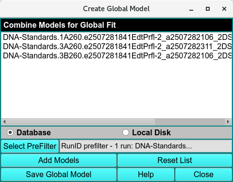
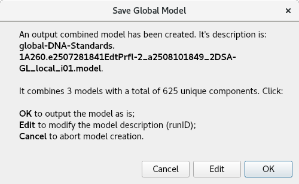
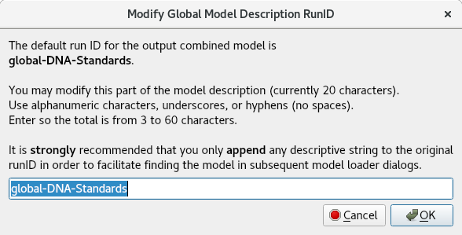

Create Global Model¶
This utility combines selected models into a single global model that can be used in global fits. The most common use of its output is to form an input to the Initialize Genetic Algorithm program in which a global set of buckets may be created for use in a global fit Genetic Algorithm run.

Create Global Model
Window Controls
(models list) |
Look here to see the list of component models so far selected. |
Database |
Select to specify model input from the database. |
Local Disk |
Select to specify model input from local disk. |
Select PreFilter: |
Open a Models Pre-Filter dialog to select Run IDs on which to pre-filter lists of models for loading. |
Add Models |
Open a Model Loader dialog to select model(s) to load into the list of component models to the global model. |
Reset List |
Clear the list of input models in order to start over in the model selection process. |
Save Global Model |
Open a dialog (see below) to save the output combined global model. |
Window Controls
Help |
Display this detailed Create Global Model help. |
Close |
Close all windows and exit. |
When the Save Global Model button is clicked, a dialog reports on the combined global model to be created and allows the user options in saving it.

Save a Global Model
If the user wishes to modify the RunID part of the output model description, a click on the Edit button brings up a dialog for entering new ID text.

Edit Global Model Name